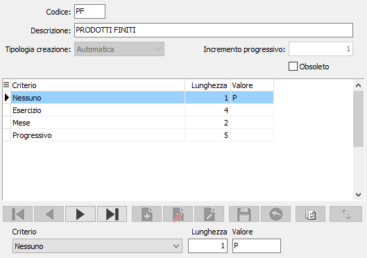

Classi matricole
La classe della matricola definisce la tipologia di creazione del codice della matricola stessa; viene associata all’articolo tramite l’anagrafica articoli. Dalla procedure di manutenzione è possibile effettuare la stampa delle classi utilizzando i tasti funzione della toolbar.

Per ogni classe è presente un codice, una descrizione, la tipologia di creazione, il valore di incremento relativo all’eventuale progressivo da applicare per ogni codice generato e la casella “Matricole univoche” che è visibile e attiva se in configurazione è selezionata l'univocità per classe ed indica, se presente la spunta, che la classe prevede solo matricole univoche, altrimenti l’univocità sarà per prodotto.
Se la tipologia di creazione è manuale la matricola dovrà obbligatoriamente essere imputata dall’utente, se è automatica il codice matricola sarà generato in automatico in base alla struttura del codice definita sulla classe stessa. La modalità mista consente l’inserimento manuale del codice ed anche la generazione automatica utilizzando il tasto funzione F11.
La struttura del codice matricola, obbligatoria per le classi automatiche, può essere composta da una serie di valori così riepilogati:
Nessuno: da utilizzare per inserire delle parti fisse nel codice della matricola tramite il campo Valore.
Esercizio: utilizza l'esercizio attuale al momento della creazione.
Anno: calcolato in base alla data di sistema al momento della creazione.
Semestre: calcolato in base alla data di sistema al momento della creazione.
Quadrimestre: calcolato in base alla data di sistema al momento della creazione.
Trimestre: calcolato in base alla data di sistema al momento della creazione.
Mese: calcolato in base alla data di sistema al momento della creazione.
Settimana: calcolato in base alla data di sistema al momento della creazione.
Giorno dell'anno: calcolato in base alla data di sistema al momento della creazione.
Giorno del mese: calcolato in base alla data di sistema al momento della creazione.
Progressivo: utilizza un progressivo univoco all'interno della combinazione classe/prodotto in base al tipo di univocità della matricola; il valore viene memorizzato nella tabella protocolli (deve essere l’ultimo campo del codice). Il campo valore indica il valore da cui iniziare la numerazione.
Progressivo periodico: utilizza un progressivo calcolato in base alla combinazione dei valori impiegati per la formazione del codice (deve essere l’ultimo campo del codice). Il campo valore indica il valore da cui iniziare la numerazione. Il valore è attivo solo in caso di gestione matricole “univoche aziendali”.